本文记录了永慕堂 AR 明信片从选题到交付的完整制作过程。设计前期从青原文旅资源中选定渼陂永慕堂为题材，参考票根、透卡与既有 AR 展示案例确定卡面形制，并在 Kivicube 平台将卡面识别图与建筑模型置入同一场景。初步设计阶段放弃整座祠堂的全景呈现，改以门楼正立面与冬景横窗为主体，通过三维模型与水墨景片的同角度比较确定立体门楼方案，同时调整底板展开方向与模型尺度。深入设计阶段把周边民居、树石处理为分层插画景片，在门前置入烟花傀儡装置，沿用旧作烟花傀儡的烟花形态，并调试其数量与尺寸。视频制作以微信扫码、翻卡识别、模型展示为镜头顺序，完成 45 秒操作演示，并配合配乐、口播与字幕。文末归纳卡面设计、手机端场景与演示视频三项交付成果，提出尽早以持卡姿态测试展示效果、先明确观众需掌握的操作动作两条工作流。
一、设计前期准备
1.1 想法起源：为什么选永慕堂
明信片任务启动之前另有一项前置工作。导师要求把南昌大学大四学生在青原区渼陂古村调研的作业展板，整理成一个可交互浏览的网页。随展板一同交付的材料里，有一份精度较高的永慕堂 SketchUp 模型。做网页阶段，这份模型已由 Codex 配合 Blender 完成转换与处理，设计者手边另有可核对建筑细部的测绘图纸。
10 月 16 日，导师划定选题范围，需从青原当地的建筑与非遗中择一，制作一张 AR（增强现实）明信片。因以上原因，题材很快落在永慕堂上。
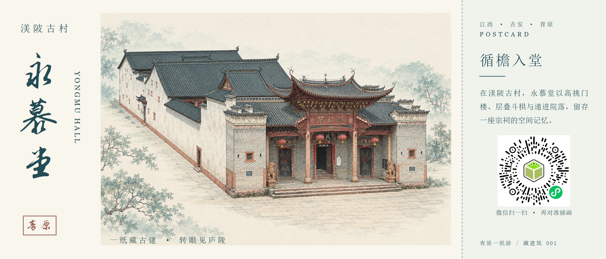
1.2 寻找明信片样式参考
样式参考由三部分构成。一张长条形的版面比例票根样式明信片，两张苏州建筑的蓝色插画用于确定画面风格，另有一张把单体建筑与局部细节并置的版式，用于借鉴介绍永慕堂的排布方式。关于屋顶形制、牌匾文字、柱子与斗栱的搭接关系，一律以永慕堂自身的测绘展板为依据。
票根方案改过数版，均未达到预期。转机来自小红书上南山南文创的一组明信片，中间嵌一条透明胶片，外围是白色卡框，形制由此定下。
1.3 扫码以后，画面怎样展开
AR 效果的参考来自两段视频。第一段是御窑明信片的演示。镜头对准卡面，一只碗从纸上凸出，碗后方立着介绍文字，卡片侧转，碗与字之间的距离随即显现。最初的设想由此而来，正面看完之后还能转到侧面继续看。
第二段是贺卡教程。卡片竖立，草地先朝观看者翻下，树林随后立起。调试阶段这一段被重新调出比对，最终成为采用的方案。依据有两条，动作更贴近人持卡观看时的姿势，观看者转动手机时画面也不易丢失。
1.4 我怎样把卡面和模型连起来
1.4.1 什么是 AR 明信片
AR 明信片是在明信片画幅之上再叠一层内容，这层内容只有经手机扫码才能看见。以定稿为例，先用微信扫一扫读取背面二维码，手机进入体验页面，随后把卡翻至正面，在页面内将镜头对准画面上的永慕堂。手机识别出这幅图，立起的门楼才出现在屏幕上。
1.4.2 我怎样把卡面和模型连起来
连接在 Kivicube 内完成。该平台是网页端的 AR 制作工具，无需编写代码，把图片与模型拖入同一场景即可摆放位置、添加动画。操作前先提供教程视频与模型文件，在浏览器内登录授权。
具体工序由 Codex 在网页中执行。先把首版票面中央的建筑插画设为识别图，再把永慕堂模型导入同一场景，调整位置，设置入场动画，最后发布。
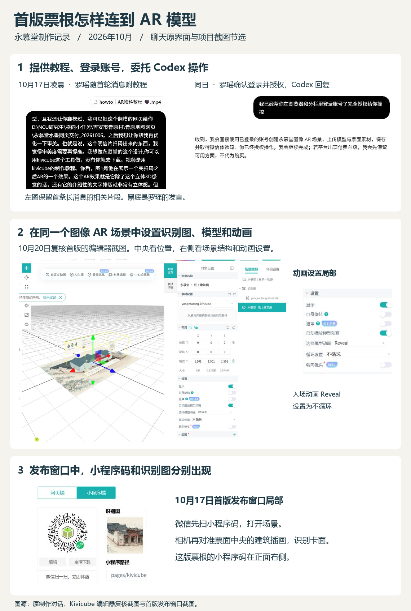
二、初步设计
2.1 一整座祠堂怎样变成了冬景门楼
第一版方案以完整呈现永慕堂为目标，采用轴测视角展示建筑主体，周边补入村舍与树木。多轮修改后问题集中显现。两侧房屋与主体比例不协调，AI 生成的树木枝叶边缘粘连，都未达到预期。轴测视角本身也不利于突出建筑特征，构图视角遂改为平视，重点落在门头牌楼。
第二版依新找到的参考明信片调整了构图与风格。画面承载于透明胶片之上，季节定为冬季，主色调取蓝色，色彩比例按白、蓝、红 6:3:1 分配。经与 Codex 多轮对话修改，形成现有版面。
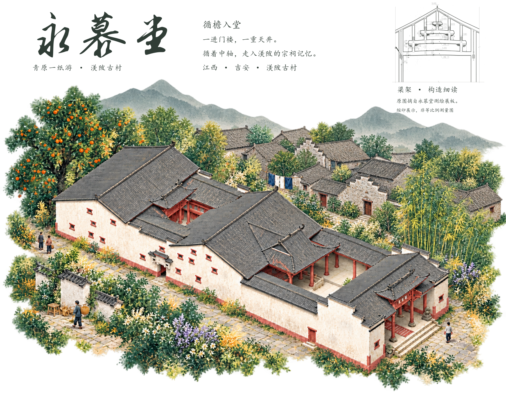
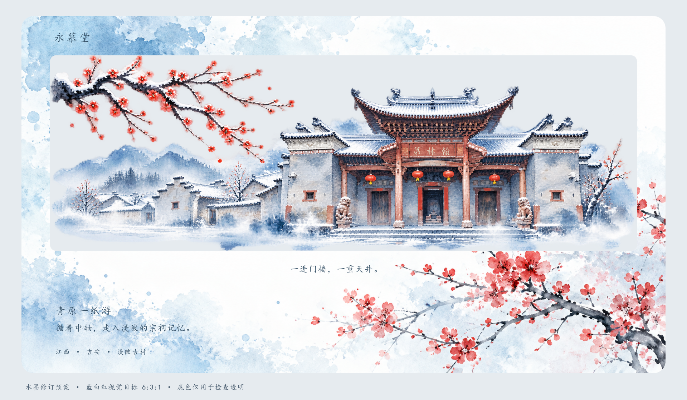
2.2 搭建并调试第一个 AR 场景
2.2.1 发现问题
第二版冬景卡面首次搭建 AR 效果时，出现两处故障。Kivicube 网页内的效果没有随素材更新，显示的仍是第一版整座建筑；手机一旦旋转角度，AR 画面随即丢失。
2.2.2 比较方案
导师提出，游客的实际动作是把明信片举起来。依此提示，参照贺卡教程改变底板的展开方式，使底板自竖立的卡面朝前翻开，门楼与配景随后出现。导师另建议放大辨识度最高的门头。这些意见连同设计者自身的补充一并提给 Codex，据此产出两个展示版本。
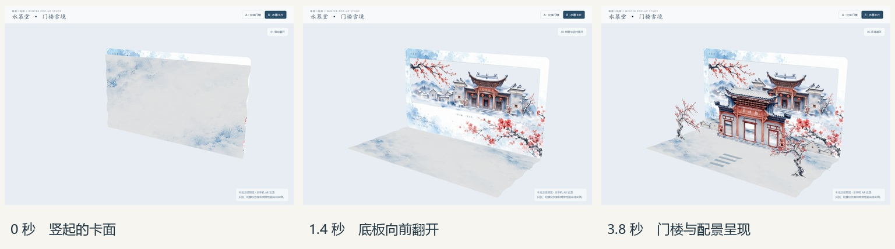
一个方案是二维门楼，水墨画绘制在透明平面上，形似贺卡里的景片，直立呈现。另一个方案是三维门楼，在既有模型上删去其余建筑主体，仅保留门楼。
经与老师讨论，三维方案被采用。二维方案的笔触与卡面更接近，正面观看效果不差，换到斜侧角度便只剩薄薄一片。三维方案在斜侧仍能交代空间关系，屋檐的进深、斗栱的样式、飞檐的起翘都可辨认。
效果确定后再次以手机实测，建筑出场方式与画面丢失这两个问题均未复现。
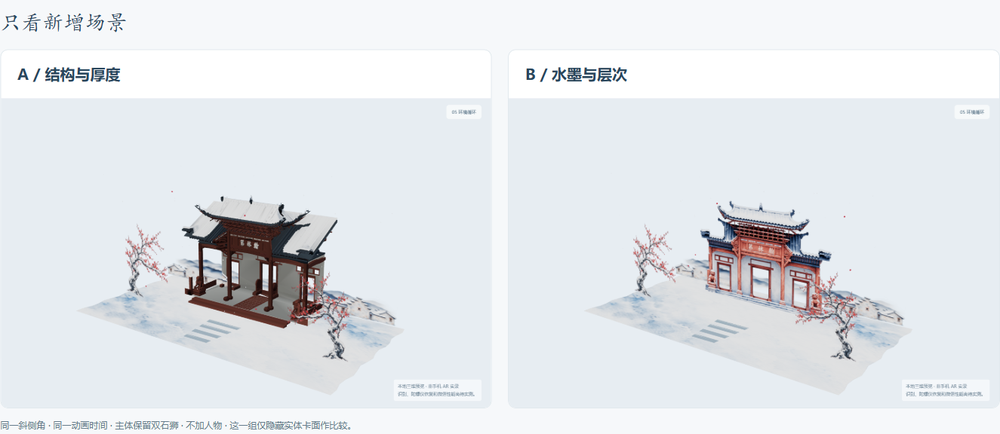
三、深入设计
3.1 完善门楼周围的场景
3.1.1 配景效果抉择
门楼确立立体呈现之后，周边房屋、树木与山石也曾尝试三维制作。成品房屋形体接近方块，与斗栱清晰的门楼并置，显得粗糙。改用图像生成工具绘制赣派民居、树木与山石，四周处理为透明，再依贺卡教程的排法逐片置入场景，前后错开。
插画替换之后，位置仍经多次调整。周边建筑与主体的比例不协调，植物配景与其他配景相互重叠，两类问题均有出现。两侧两幢房屋高度偏低，抬高之后才与门楼相称；植物样式另行美化。过程中另发现一处屋顶与树冠重叠，在手机里观看时两片景片粘在一起。
修改通过自然语言对话完成，在对话框内说明问题所在与改动方向。这一分工贯穿整个制作。设计者承担决策，指出需要调整的位置；Codex 承担执行，依上下文操控电脑在 Kivicube 网页内改动。
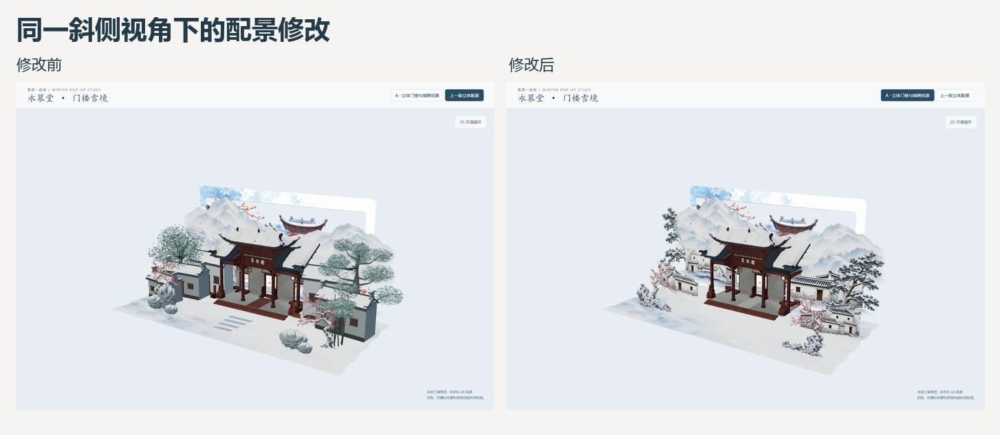
3.1.2 丰富建筑前广场
主体与配景完成后，门前区域显得空旷，需要补入带渼陂地方民俗色彩的元素。设计者此前依当地非遗技艺做过烟花傀儡的数字艺术，遂将其源代码交付 Codex，请它把该装置置于永慕堂之前。
构思由烟花傀儡这项非遗技艺切入，画面设定为过年时节的场景，人们在永慕堂前点燃烟花傀儡庆祝节日。
按此设想，Codex 优化了烟花傀儡的呈现方式，并在画面中添加动作各异的人物。原作背景被去除，竹竿、花盘与傀儡垂落的动作予以保留。为使 Codex 准确掌握展开过程，渼陂烟花傀儡的相关资料与表演参考视频一并提供。
旧作含金、蓝两种烟花，形态以实景照片与视频为参照，由 Codex 先调出绽放样式，再给出参数面板。颜色与大小在滑块上调整，至符合预期为止。明信片另试过一版烟花，比较后仍换回旧作的两种。保留的理由是那道升起的轨迹，视线可沿它上行，到高处才见花散开。炸开时的烟雾也在考量之内，导师此前曾提及这一点。会议预览时导师又建议调整绽放效果，双方来回拖动滑块，比对大小与数量的配合，最终参数定为四组、大小一倍。
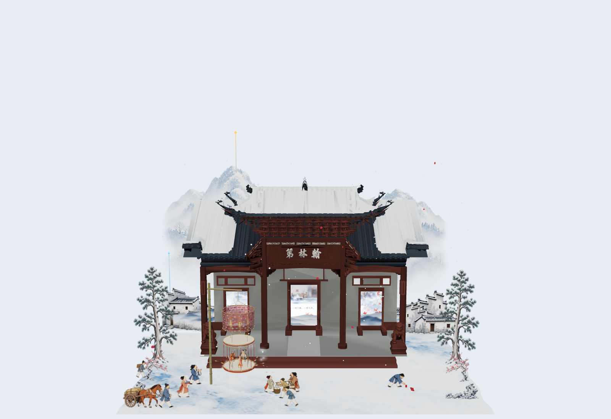
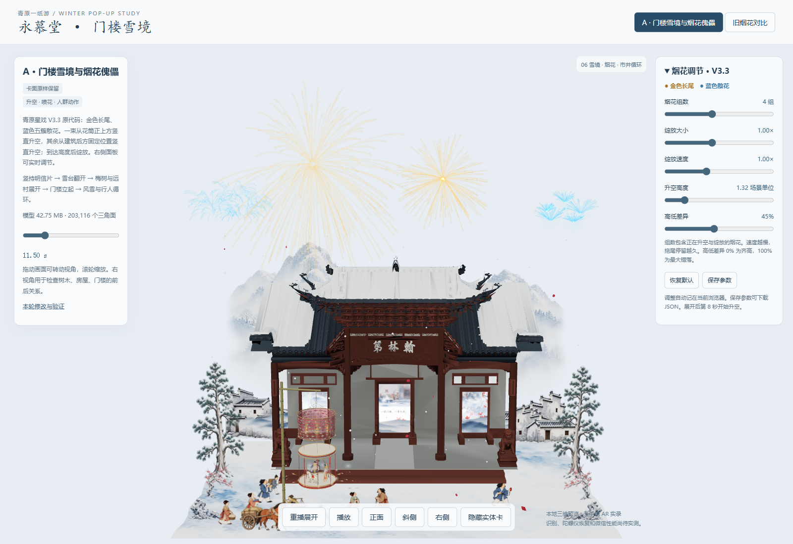
四、视频制作
4.1 制作演示视频过程
演示视频需要解决的核心疑问是，观众扫过背面二维码之后，何时应当翻卡。这个动作对制作者而言已成本能，转成演示容易一带而过。镜头顺序由此确定，先呈现微信打开体验页面，再呈现卡片翻面与镜头对准画面，最后播放完整的模型展示。
动效要求、video-shotcraft 的 Remotion 镜头库网站，以及 MotionGit 的“明暗快切·产品宣传”模板文件（后缀为 .motion），一并提供给 Codex 作参考。
前期以 Remotion 试镜头，定稿在 MotionHarness 内编排并导出。片头借用镜头库中的一个动作，“永慕堂”三字先行停顿，再缩小移至左上角，明信片随之出现。
4.1.1 遇到的问题
初期设想以手部线稿示范持机与翻卡，并要求为手部动作预留画面空间。带手版本产出后，最先暴露的是手指结构不自然，握持手机与卡片的姿态都显粗糙。修改意见很直接，去掉手部，其余保留，衔接部分维持原样。
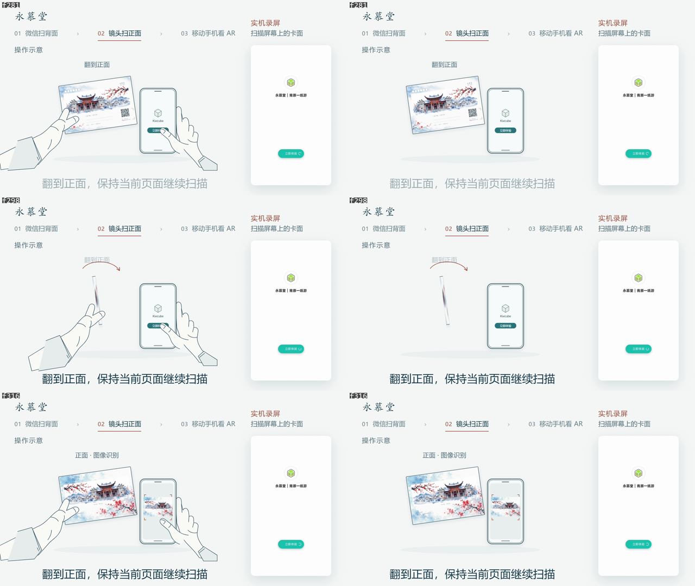
4.1.2 配音配乐剪辑操作
后期在 MiniMax 内完成配乐、口播与字幕，目的是让初次接触 AR 的观众了解操作步骤。背景音乐由设计者提供，口播与字幕由 AI 生成，剪辑流程一次走通。
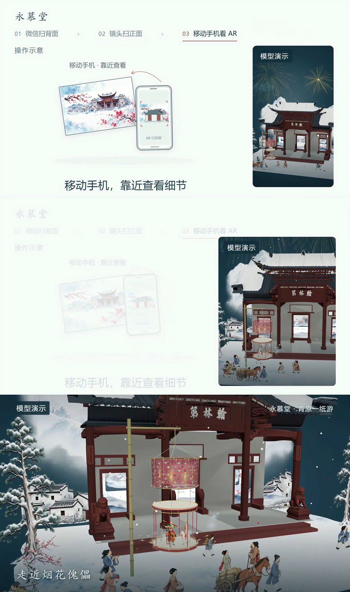
五、最终成果与制作心得
5.1 定稿里的永慕堂
定稿正面，透明横窗内为永慕堂雪景，背面右下角设微信扫码入口。门楼自卡面展开、烟花傀儡出场的过程，收在约 45 秒的演示短片里。片内画面有两种来源。操作示范部分，右侧为手机扫描电脑屏幕卡面的录屏；切至全屏后，所见高清细节来自模型演示。
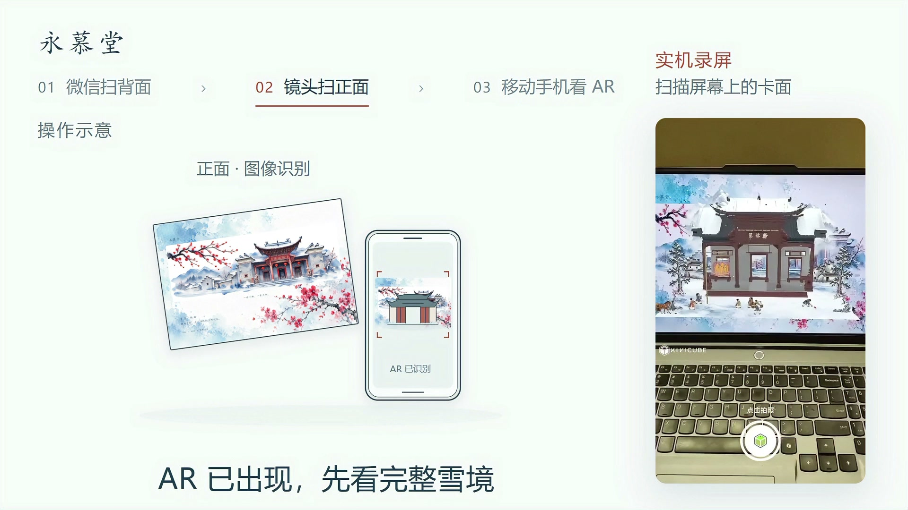
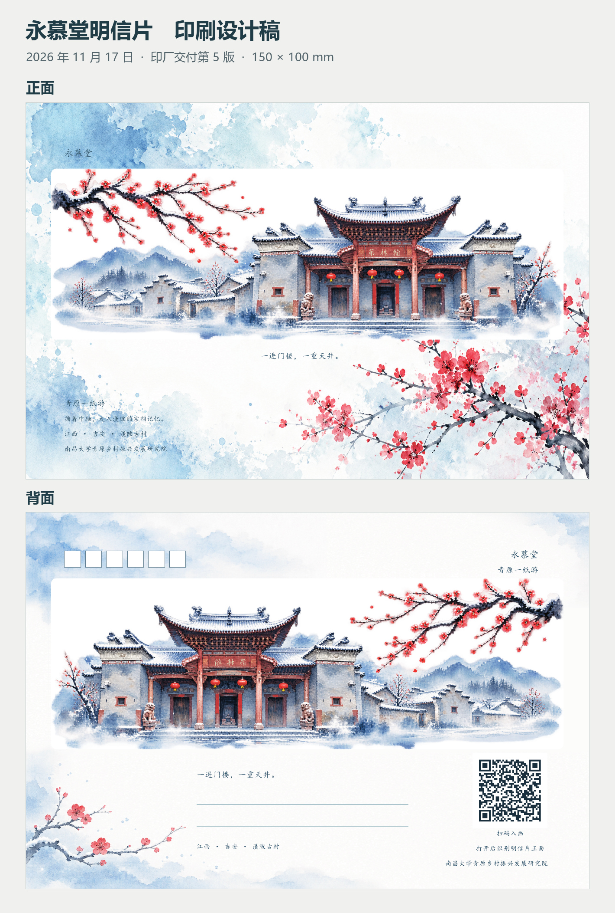
5.2 制作工作流分享
5.2.1 AR 明信片制作工作流
核心思路是把模拟效果和实操效果分开验证，每完成一步就留下一份下一步能直接用的文件。
第一步，先试举卡的姿势。场景里只放一张卡图、一块底板和一个简单门楼的时候就拿手机扫一次。要测三件事，举起来能不能看清牌匾，底板打开时手要不要跟着挪，举半分钟会不会累。这一步放在摆树、放人物之前，改动成本最低。
第二步，分清三类素材。测绘图管建筑依据，卡面风格参考管画法，动态参考管扫码之后的效果。三类分开存，不要混在同一张参考图里，否则做的时候会拿别处的好看去替本地建筑作证。
第三步，做纸框和胶片分层。白卡框、横窗的透明区、画面内容各占一层。透明区要单独检查，用浅灰底预览，才能看出哪块是落在瓦上的雪、哪块要透出背后的景物。
第四步，在 Blender 里把模型和动画调好，先在本地预览。位置、朝向、入场动画在本地确认过，再导入平台，避免在网页编辑器里反复试错。
第五步，导入 Kivicube，换真手机验收。网页显示发布成功只代表文件上传了，识别稳不稳、角度够不够、模型大小合不合适，都要拿手机对准实物卡面看一遍。
贯穿全程的一条，每步留可复用的文件。烟花在本地参数面板滑块上调好之后，把参数和对应版本记下来。后面平台场景里该替换哪份素材、下次换一幢建筑要重调哪些数，都靠这份记录，不用从头再试一遍。
5.2.2 演示视频制作工作流
分镜方法沿用之前做青原文旅地图导览片时的 onetake 思路，这次的重点是让第一次拿到卡的人跟得上。顺序上先定观众要学会哪个动作，再决定每个镜头给什么。
第一步，把观众要做的动作列出来。拿着一张卡，需要做的只有几件事，扫背面、进页面、翻到正面、对准插画。按实际发生的顺序写成清单，后面所有镜头都围绕这份清单排。
第二步，给每个动作配最省事的呈现方式。进页面这种界面操作，用实拍录屏最清楚；卡片怎么翻，画个示意图就够，不必实拍；想看屋檐和傀儡的细节，就把画面切给模型。
第三步，找参考动效，定片头。从镜头库里挑动作，选到合适的才知道该插在第几步。片头用“永慕堂”三个大字先停一下、再缩小移到左上角，卡面跟着出现，观众第一眼就知道这支片子在讲哪张卡。
第四步，先查衔接，再查声音。第一版出来后先连看一遍镜头，动作之间有没有断；再去对口播和字幕，看说到哪一句时画面正好在做那件事。
第五步，交付时留齐可改的资产。可编辑工程、口播脚本、单独的人声音轨，以及每句话对应的时间点。以后哪一句想放慢一点，只改那一句，不用整片重排。
5.3 心得体会
这次制作对设计者而言是一次跨领域尝试。建筑学专业的学生通常不涉足明信片设计，做出带 AR 效果的一张更不容易。AI 的介入把大部分门槛降了下来，机械性的工作得以快速完成。
对 AI 的定位大致可以概括为一名执行力很强的助手。它擅长按指令执行，创意与审美上缺少主观判断。从 1 到 100 的路径被大幅压缩，从 0 到 1 的创造仍难跨越。
跨领域探索还带来一个附带认识，对该领域基础知识的掌握变得更为关键。AI 放大的是使用者本身的能力。与它对话的效果取决于行业认知，认知足够，才判断得出它的输出何处有误，也才能用专业逻辑引导它绕开障碍，找到更省力的解法。
最后需要提及导师的支持。愿意让学生使用 AI 创作并承担试错成本，这一轮尝试才得以完成，设计者也因此在其他专业领域看到了自身的可能性。
一审：李韵琴；二审：张嘉新；三审：周志仪